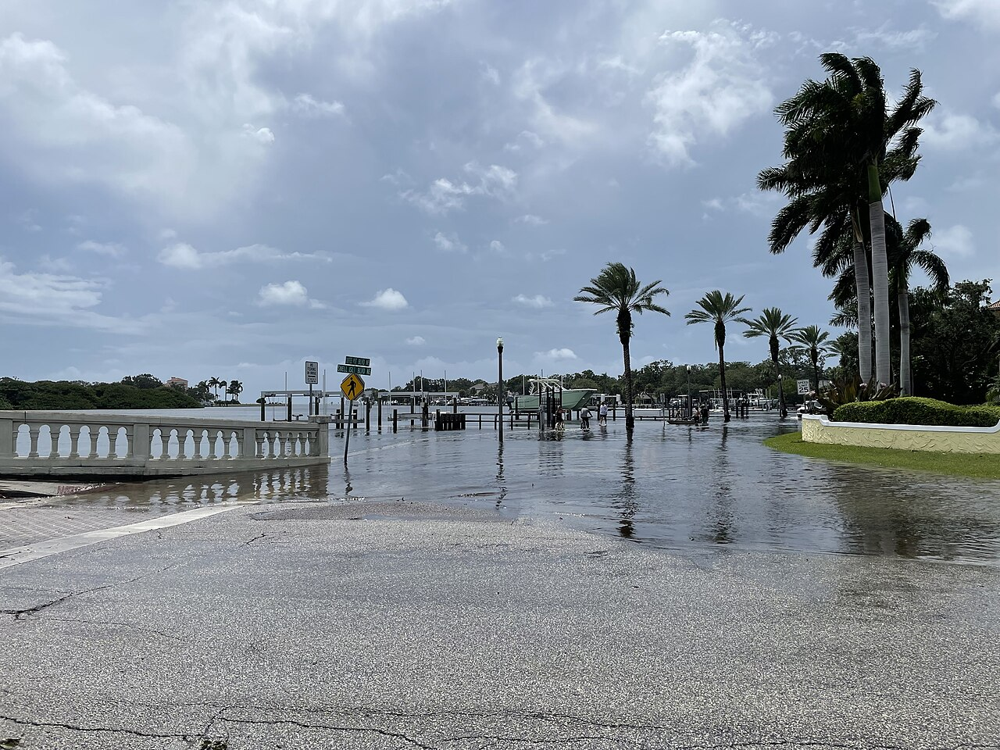
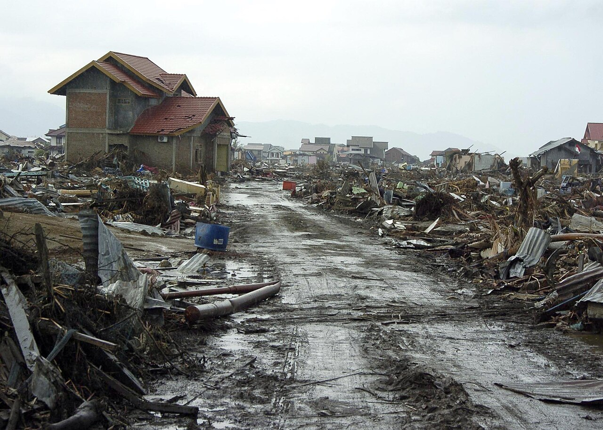

방파제를 넘는 바닷물
교과서 p. 66학습 목표
- 해일이 발생하는 여러 가지 원인을 설명할 수 있다.
- 해일의 피해 사례를 조사하고 대처 방안을 제안할 수 있다.


지진이나 태풍은 어떻게 이런 큰 물결을 일으킬까?
예시: 해저 지진이나 태풍이 해수면의 높이를 크게 바꾸면서 해파가 생기고 퍼져 나가기 때문입니다. 교과서 운영안은 3차시(폭풍 해일·지진 해일 / 탐구 프로젝트 2차시)입니다.
2차시(100분) 수업 운영안
| 차시 | 단계 | 시간 | 활동 |
|---|---|---|---|
| 1차시 | 동기 유발 | 5분 | 태풍 때 해안 도로가 잠긴 사진, "비가 많이 와서일까, 바다가 올라와서일까?" |
| 핵심 개념 1 | 25분 | 폭풍 해일의 두 원인(낮은 기압·강한 바람) → 계산 → 만조·만 지형과 겹칠 때, 위험 반원 | |
| 사례 탐구 | 12분 | 해수면 높이 기록 그래프 읽기(조석 + 해일 분리하기) | |
| 정리 | 8분 | O/X ① | |
| 2차시 | 핵심 개념 2 | 20분 | 쓰나미 발생과 천해파 성질, 속도·도달 시간 계산, 전조 현상 |
| 비교 정리 | 7분 | 폭풍 해일 vs 쓰나미 표 완성 | |
| 탐구 활동 | 15분 | 빅데이터·시뮬레이션으로 지진 해일 조사, 대피 행동 요령 | |
| 형성 평가 | 8분 | O/X ②, 문항 풀이 |
폭풍 해일
교과서 p. 66태풍이 해수면을 들어 올린다
- 해일: 태풍, 해저 지진, 해저 화산 폭발, 운석 충돌 등으로 해수면이 높아져 바닷물이 육지로 밀려드는 현상
- 폭풍 해일: 태풍 같은 강한 저기압이 해안에 다가올 때 해수면이 높아져 바닷물이 내륙으로 밀려드는 현상
- 기압 효과: 저기압 중심은 기압이 낮아 해수면이 주변보다 높다. 해면 기압이 1 hPa 낮아지면 해수면은 약 1 cm 높아진다. 중심 기압이 주변보다 50 hPa 낮으면 약 50 cm 높아진다.
- 바람 효과: 태풍의 강풍이 바닷물을 해안으로 밀어 올린다. 해안이 태풍의 위험 반원에 있으면 해안 쪽으로 부는 바람 때문에 해수면이 더 높아진다.
- 만조와 겹치면 해수면이 이미 높으므로 피해가 더 커진다.
자세히 알아보기 ① 폭풍 해일은 어떻게 커질까? 심화 정리
- 해일: 기상 현상이나 지각 변동으로 해수면이 갑자기 높아져 바닷물이 육지로 밀려드는 현상
- 폭풍 해일: 태풍이나 강한 저기압 때문에 짧은 시간에 해수면이 올라가는 해일
| 원인·조건 | 작용 |
|---|---|
| 낮은 기압 | 해수면을 누르는 공기의 무게가 줄어 해수면이 부풀어 오른다. 기압 1 hPa ↓ → 해수면 약 1 cm ↑ |
| 강한 바람 | 바다에서 육지 쪽으로 부는 바람이 해수를 해안으로 밀어 쌓는다 |
| 얕은 수심 | 태풍 아래 돔처럼 솟은 해수가 해안으로 오며 수심이 얕아지면 더 높아진다 |
| 만조와 겹침 | 평소보다 높은 만조 해수면 위에 해일이 더해져 피해가 커진다 |
| 만·하구 지형 | 좁고 막힌 곳에 들어온 해수가 빠져나가지 못해 수위가 계속 올라간다 |
| 하천수 유입 | 태풍의 큰비로 늘어난 강물이 빠지지 못해 하구 침수가 심해진다 |
주변 기압 1010 hPa, 태풍 중심 기압 950 hPa → 차이 60 hPa → 해수면 약 60 cm 상승
• 여기에 강한 바람이 해수를 밀어 쌓는 효과와 만조, 파도가 더해지면 해안의 수위는 수 m까지 높아질 수 있다.
• 북반구에서 태풍 진행 방향의 오른쪽(위험 반원)은 태풍의 회전 바람과 이동 방향이 겹쳐 바람이 더 강하다. 이쪽 해안에서 해일이 더 크게 나타나기 쉽다.
자세히 알아보기 ② 폭풍 해일의 피해와 대처 심화 정리
- 피해: 저지대 침수, 강한 파도와 흐름에 의한 해안 시설·선박 파손, 항만 기능 마비, 유해 물질 유출로 인한 해양 오염, 인명 피해
- 대처: 방파제·방조제 같은 방재 시설 설치, 해일 예보와 경보, 경보가 나오면 즉시 고지대·안전한 건물로 대피
조위 관측소의 해수면 그래프에는 하루 두 번 오르내리는 조석이 기본으로 나타난다. 태풍이 지나간 날에는 이 규칙적인 곡선 위에 갑자기 솟은 부분이 더해지는데, 이 '추가 상승분'이 폭풍 해일이다. 해일이 만조와 겹치면 기록상 최고 수위가 평소 만조보다 훨씬 높아진다.
개념 확인 ① O/X
지진 해일 (쓰나미)
교과서 p. 67대양을 비행기처럼 건너는 파도
- 해저에서 지진, 화산 폭발, 산사태 등이 일어나 해수면이 급격히 변하면 파장이 매우 긴 해파가 생긴다. 이것이 해안으로 밀려와 생긴 해일이 지진 해일(쓰나미)이다.
- 파장이 100~200 km로 매우 길어서, 평균 수심 약 4 km인 대양 한가운데에서도 천해파의 특징을 나타낸다.
- 천해파의 속도는 수심의 제곱근에 비례하므로 깊은 대양에서 매우 빠르다.
- 해안에 가까워지면 느려지는 대신 파장이 짧아지고 파고가 수 m~수십 m로 높아져 내륙까지 밀려든다.
- 사례: 2004년 인도네시아 수마트라 앞바다 규모 9.1 지진의 해일, 2011년 일본 북동부 규모 9.1 지진의 해일(원자력 발전소 방사능 물질 유출)
우리나라의 해일 피해와 대처
- 폭풍 해일: 열대 태평양에서 발생한 태풍이 북상하며 해안 지역에 자주 피해를 준다. 태풍의 진로와 강도로 비교적 빨리 예보할 수 있지만, 정확한 피해 규모를 예측하려면 해일 당시의 기압, 만조 시각, 해안·해저 지형 등을 함께 고려해야 한다.
- 지진 해일: 주변 해역에서 큰 지진이 일어나면 피해를 입을 수 있다. 주기적인 현상이 아니라 예보가 어렵지만, 지진파가 지진 해일보다 빠르므로 지진 관측과 동시에 주의보를 낼 수 있다.
- 대처: 체계적인 해일 경보 시스템 운영과 강화, 해안 방파제·차수벽 정비, 신속한 대피 훈련
자세히 알아보기 ③ 쓰나미(지진 해일)의 정체 심화 정리
- 원인: 해저 지진(특히 해구의 큰 역단층), 해저 화산 활동, 해저 산사태 등으로 해저면이 갑자기 솟거나 꺼지면, 그 위의 바닷물 전체가 함께 움직여 해수면이 크게 출렁인다.
- 파장이 매우 길다: 넓은 해저가 한꺼번에 움직이므로 마루와 골도 넓다. 파장은 약 100~200 km로, 바다 깊이(약 4~11 km)보다 훨씬 길다 → 먼 바다에서도 천해파
- 속도 = √(gh): 수심에 따라 정해진다. 깊은 대양에서는 약 700~800 km/h로 매우 빠르고, 해안에서는 느려진다.
- 먼 바다에서는 잘 모른다: 파고가 1 m 안팎이고 파장이 수백 km라 해수면 경사가 매우 완만하다. 배 위에서는 거의 느끼지 못한다.
- 해안에서 무섭게 높아진다: 앞부분이 느려지고 뒷부분이 따라붙으며 에너지가 좁은 구간에 모인다 → 파고가 수 m~수십 m까지 높아진다.
평균 수심 1000 m인 바다를 600 km 건너는 쓰나미
v = √(9.8 × 1000) ≈ 99 m/s ≈ 356 km/h → 시간 ≈ 600 ÷ 356 ≈ 약 1.7시간
• 일본 서쪽 바다에서 생긴 쓰나미가 2시간 안팎이면 우리나라 동해안에 도착할 수 있는 까닭이다.
• 지진파(P파 약 6~8 km/s)는 쓰나미보다 훨씬 빠르다 → 지진을 먼저 감지해 쓰나미 경보를 낼 수 있다.
자세히 알아보기 ④ 폭풍 해일과 쓰나미 비교, 그리고 사례 심화 정리
| 구분 | 폭풍 해일 | 쓰나미(지진 해일) |
|---|---|---|
| 원인 | 태풍·강한 저기압 (기상 현상) | 해저 지진·화산·산사태 (지각 변동) |
| 해수면을 올리는 힘 | 낮은 기압, 강한 바람 | 해저면의 급격한 융기·침강 |
| 파동의 성질 | 천해파 성질 (파장이 매우 김) | 천해파 (파장 100~200 km) |
| 예측 | 태풍 진로 예보로 수일 전부터 대비 가능 | 지진 발생 후 수 분~수 시간 안에 경보 |
| 잘 생기는 곳 | 태풍 경로의 해안, 만, 하구 | 환태평양 조산대 (쓰나미의 80% 이상) |
| 공통점 | 해안에서 수심이 얕아지면 높아지고, 만·하구 지형과 만조가 겹치면 피해가 커진다 | |
| 사례 | 내용 |
|---|---|
| 2004년 인도양 | 수마트라 인근 해구에서 규모 9.1 지진 → 인도양 전역으로 퍼져 아프리카 해안까지 도달, 사망자 약 28만 명 |
| 2011년 동일본 | 도호쿠 앞바다 규모 9.0 지진 → 지역에 따라 수십 m 파고, 사망·실종 약 2만 명, 원자력 발전소 사고 |
| 1983년 · 1993년 동해 | 일본 서쪽 바다 지진으로 생긴 쓰나미가 우리나라 동해안(울릉도, 삼척 임원항 등)에 도달해 선박·시설 피해 |
| 2022년 통가 | 해저 화산 폭발로 생긴 쓰나미가 태평양을 건너 약 12시간 뒤 우리나라 남해안에서도 관측 |
개념 확인 ② O/X
지진 해일의 피해 사례와 대처 방안 조사·발표하기
교과서 p. 68프로젝트 · 빅데이터와 시뮬레이션으로 지진 해일 조사하기
목표 빅데이터와 시뮬레이션으로 전 세계 지진 해일의 피해 사례를 조사하고, 피해를 줄이는 대처 방안을 토의·발표할 수 있다. 준비물 스마트 기기
- 지진 해일의 약 86%는 지진과 화산 활동이 활발한 환태평양 조산대를 따라 발생한다.
- 미국국립환경정보센터(NCEI) 자연재해 뷰어(www.ncei.noaa.gov/maps/hazards)를 실행한다.
- 모둠별로 조사할 지진 해일을 골라 최대 파고, 해일의 이동 시간, 에너지 전파 모습을 확인한다.
- 인명·경제적 피해 규모를 조사하고, 피해를 줄일 대처 방안을 토의한다.
- 조사한 피해 사례와 대처 방안을 발표한다.
이동: 진앙에서 동심원 모양으로 태평양으로 퍼져, 약 5시간 뒤 필리핀·알래스카, 약 10시간 뒤 오스트레일리아 중부·캘리포니아에 도달
피해: 약 1만 8000명이 희생되었고 대부분 지진 해일 때문이었다. 원자력 발전소가 침수되어 방사능 물질이 유출되는 등 막대한 피해가 났다.
대처 방안: 경보 시스템의 운영과 강화, 방파제 정비, 신속한 대피 훈련
자료실 · 지진 해일이 올 때 이렇게 행동하자
- 해안에서 지진을 느끼거나 특보가 나오면 즉시 해안·하천에서 벗어나 높은 곳이나 긴급 대피 장소로 간다. 시간이 없으면 튼튼한 건물의 3층 이상이나 해발 10 m 이상의 언덕으로 간다.
- 바닷물이 갑자기 빠져나가거나 큰 소리가 나는 것은 위험 신호이다. 곧바로 높은 곳으로 피한다.
- 지진 해일은 여러 번 반복될 수 있으므로, 특보가 풀릴 때까지 낮은 곳으로 돌아가지 않는다.
- 특보가 나오면 주변에 알리고, 재난 방송의 안내에 따른다. 배는 시간이 있다면 깊은 바다로 이동한다.
스스로 확인하기
1. 폭풍 해일의 피해가 커지는 경우는?
2. 지진 해일이 천해파의 특징을 나타내는 까닭은?
3. 창의력 더하기 · 기후 변화로 폭풍 해일의 피해는 어떻게 될까?
개념 확인 문제
그림 출처
사진은 Wikimedia Commons의 퍼블릭 도메인 또는 CC 라이선스 자료이며 그림 아래에 저작자와 라이선스를 표시했습니다. 시뮬레이션은 직접 만들었습니다.